The complete archive of a friend group that started arguing about a badminton net and somehow ended up with an empress, a cartel, a chess champion and a dog in a party hat.
scroll slowly — it gets worse
31Editions filed
12Suspects
847Trip proposals
108Arey yaars
0Rematches played
The Timeline
Everything that happened, in the order it happened, with photographic evidence where the group was careless enough to take some.
Act I · The Net Wars
The BeginningBadmintonNo. 194
Sherry misses by four feet, blames the net
The founding incident. One shot, four feet wide, and a sentence that started a civilisation. Measurements later confirmed the net at regulation height. It has never received an apology.
"Net thoda upar hai yaar."
Day 2–4BadmintonNo. 195–197
The escalation: no net, no shuttle, then blindfolds
Abhishek demanded a rematch with no net at all. Rahul and Amit countered with no net and no shuttle, backed by a fourteen-slide deck. Sumana and Pankhuri tabled Maram Patti — blindfolded, belt-based, entirely unhinged. Spectators were documented as "visibly confused."
Day 5–9CardsNo. 198–202
Puja teaches the group Cabo. She regrets it immediately.
Eleven minutes of instruction. Abhishek asked what a King does four separate times. The game then consumed everything, producing the constitutional clause that still governs every decision: "Cabo ke baad decide karte." Trips, dinners and proposals have died in that sentence.
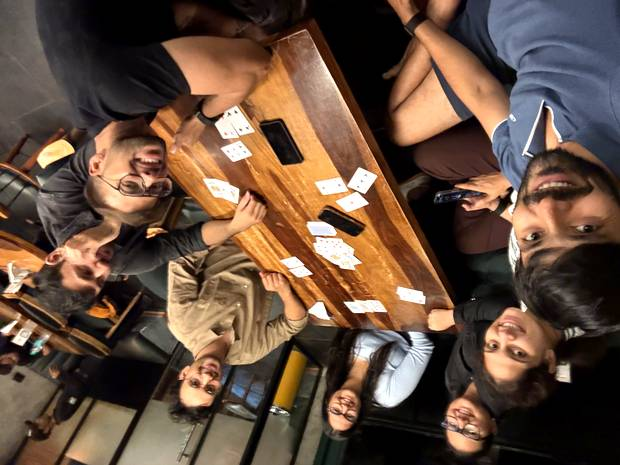
six players, two phones, zero trust
Act II · The Rise of the Empress
Sun, 26 Jul 2026CardsNo. 204
Champion warns Bluff Queen, immediately regrets it
Sensing a trap, Cabo Champion Abhishek warned Sherry she'd made a mistake — based entirely on her face. Her face is fiction. Three rounds later he was holding half the deck and reconsidering everything.
"Ye galti kar diya apne."
The warning now hangs framed in her trophy room. It has been repeated an estimated 47 times since, mostly to furniture.
Mon, 27 Jul 2026ScandalNo. 205
Cleanliness God audited in absentia; claims "very exaggerated"
Sherry, Avani and Rahul raided Rudra's residence while he was elsewhere. Even the Bluff Queen certified the verdict as "the one honest thing I'll say all year." His defence — that the house was inspected on a bad day — is now classified as the household equivalent of blaming the net.
Tue, 28 Jul 2026CardsNo. 206
Sherry crowned Empress of Bluff AND Cabo
Four rounds, one empire. Final total of 4 while the rest of the field set fire to itself. Rudra was declared non-existent at the table while Abhishek played 80% of his game for him — the first recorded case of a man being outsourced in real time while sitting right there.
Rahul posted +35 in a single round, the worst in recorded history, now museum property.
Act III · Ice, Legislation & Betrayal
Sun, 2 Aug 2026ScandalNo. 209
Man vs Bucket. Bucket wins on points.
Fresh off his +35 masterpiece, Rahul sought redemption via the Ice Bucket Challenge and lost to still water — the second time that month he was defeated by an inanimate object with better composure. He rebranded it "Goa ocean training," then later "canyon acclimatization."
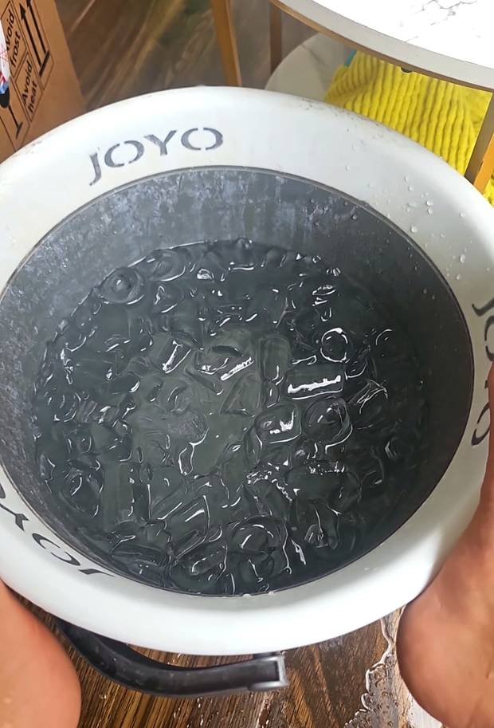
feet, seconds before they resigned
Aug 2026BadmintonNo. 209
The Amit Clause enters law
Following an incident under the Plastic Bat Act, Amit was sentenced to play all badminton games, permanently — the only punishment in history that doubles as a cardio programme. He complied silently. His knees filed an appeal. Appeal dismissed.
Wed, 5 Aug 2026TripsNo. 211
Goa finalised, then deceased three days later
After 847 proposals, one survived — and lasted 72 hours before Gandikota rose from the gorge. The planning committee's official statement: "We didn't cancel Goa. Goa failed its probation period." Standing legislation carried across both destinations: Sherry collects card-taxes en route, Avani's tea must flow during gameplay.
Act IV · The Kitchen Years
Thu, 6 Aug 2026FoodNo. 212
Tea acquitted, chutney cleared of all charges
Rudra produced tea so successful it partially restored his god status — the first claim of his career to survive independent inspection. Sumana's peanut chutney was declared genuinely excellent, the only objection being its colour, dismissed on the grounds that nobody has ever tasted a colour.
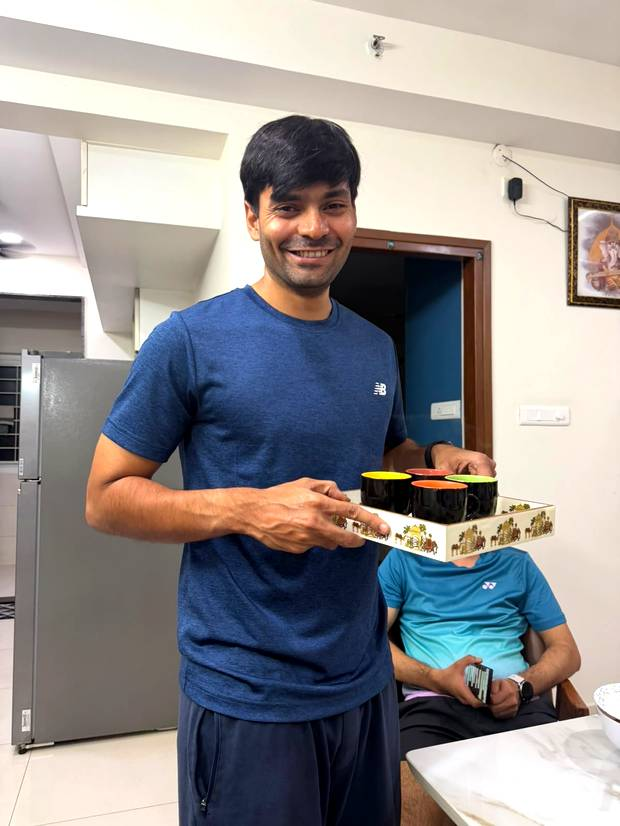
the tea that cleared his name — four cups, zero complaints
On court the same day: Sherry crossed 108 "arey yaar"s — the exact count of a sacred mala — Abhishek filed 40 wind reports from inside a sealed indoor hall, and Amit said nothing at all.
Thu, 6 Aug 2026GurukulNo. 212
The Gurukul opens: Avani enrols in everything
Tea-making and badminton coaching from Rudra in a single day, making her the institution's first full-time student. One more subject and fees apply.
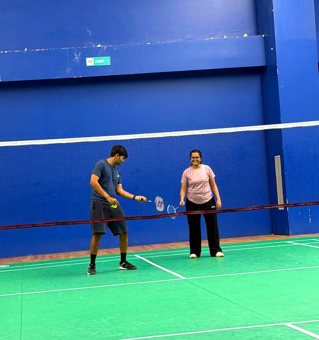
Coach explains the theory. Student politely waits for a serve.
Four headlines this newspaper never expected to typeset. The man who lost to a bucket won an actual badminton tournament and booked the Goa hotel in the same week — two functioning achievements in seven days.
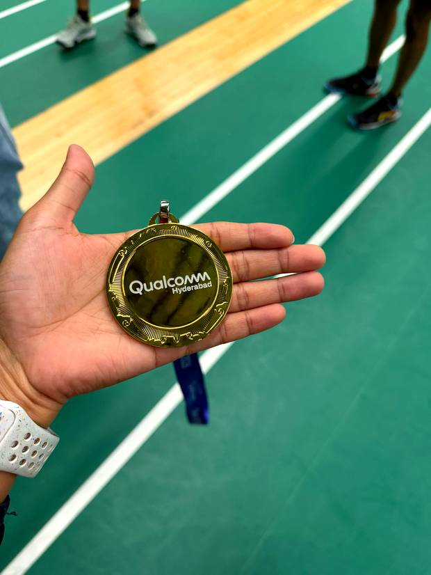
we checked the medal. twice.
Shilpee, mocked for months over perfect absence, was not absent. She was training — and won her company chess tournament outright. Our "Scandal Pending" rating was recalled. The scandal was competence.
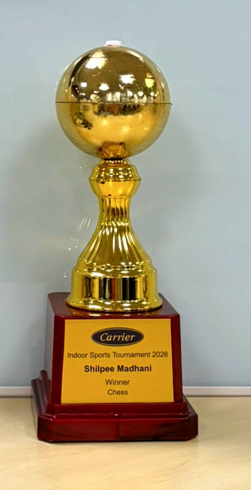
attendance: 0. trophies: 1. checkmate, all of us.
And field reporters in Gurgaon discovered why the Empress had skipped Cabo: a fully operational establishment named SHERRY'S — Cafe & Community. She wasn't missing the game. She was franchising.
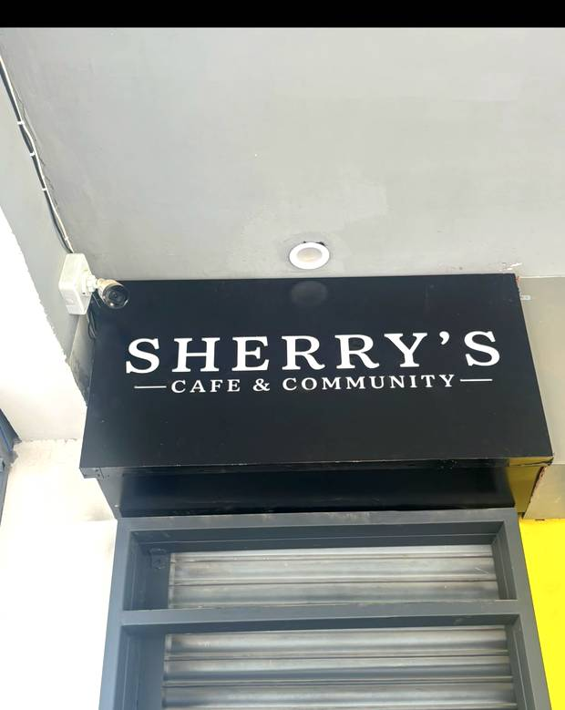
"community" — bold word from the empire's tax department
Aug 2026ScienceNo. 215
Man plays his own cards, wins — researchers baffled
With Abhishek missing all week (officially office work, actually a five-day sleep attempt), Rudra faced Cabo alone for the first time — no cartel, no whispered guidance — and won. Compared by researchers to a man whose training wheels fell off mid-ride who, to everyone's horror, simply kept cycling.
Act VI · Goa Actually Happens
Mon, 17 Aug 2026TripsNo. 216
The trip happens. Then one message ends the holiday forever.
Goa was long, glorious and fully enjoyed — the group's first ever event with zero recorded excuses about wind, light or nets. Everyone returned to Hyderabad intact. The holiday did not. Hours later Rudra, who had covered eleven editions of this trip without attending it, asked the group what the plan was for tomorrow.
"3 meals and office 😑"
Linguists note the genius: no complaint, no exaggeration, no lie. It simply names the two remaining features of adult existence and attaches the correct emoji. Someone tried to suggest a game night. It did not survive the sentence.
Act VII · Cake, Cartels & Convictions
Sat, 22 Aug 2026BirthdayNo. 219
Abhishek's birthday ends in a ceasefire signed in chocolate
The man who once warned the Empress she'd made a mistake sat defenceless on a sofa while she advanced with frosting. Hands were folded in prayer. It did not work.
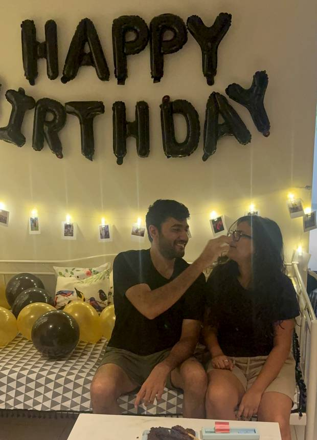
peace treaty signed in chocolate. hostilities suspended till Monday.
The night's real story happened away from the cake: Sherry tried to teach Rudra to shuffle (failed, cites "stepping stones"), while Rahul taught Abhishek to deal cards with studious technicality — and he learnt it, on his own birthday. The Gurukul quietly changed hands.
Mon, 24 Aug 2026BadmintonNo. 220
Man spotted playing badminton alone; it's just Amit again
Sentenced to play all games forever, Amit has apparently interpreted "all" to include the ones nobody else turns up for. The Act did not specify that opponents were required, and he has never been the type to look for loopholes.
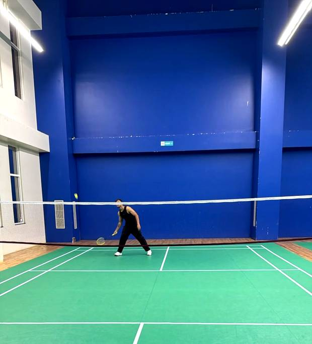
no opponent. no partner. no complaints.
Wed, 26 Aug 2026ScandalNo. 222
The 11:15 shutdown: a sabotage disguised as civic duty
Abhishek and Amit became the most destructive partnership the court has seen — opponents were not defeated so much as processed. Then, at exactly 11:15 pm, Puja and Sherry discovered a deep and sudden respect for closing time, rallied everyone off the court, supported CISF and won the guard's heart.
Investigators note the civic conscience arrived at 11:14. The Empress declined to comment, which in this newspaper's experience is a confession.
Act VIII · Festival Season
Sept–Oct 2026CardsNo. 217–218
Four new games, zero badminton
The court reopened to great fanfare and precisely nobody. Indoors, the group discovered poker, seep and judgement. Sherry and Rahul — historic enemies — merged into the group's first criminal enterprise and began systematically looting the table. Everyone learnt seep except Rudra, who after three games had taken to nodding at the right moments.
"Galti kar diya mein."
— Sherry, during seep, repeatedly. The same sentence, turned inward, at last. Scholars call it the most significant grammatical event in the group's history.
Puja beat Abhishek in her first ever game of judgement. Rudra won judgement by tweaking the rules — announced beforehand, agreed by everyone, entirely in his favour. This is not cheating. This is legislation.
Oct 2026FoodRunning
The food archive expands
Idly summit, litti chokha at Puja & Amit's, Broadway puff pizza, late-night maggi and desserts. Every single item uncriticised — because the plates always came back empty. The maggi pot is now considered a member.
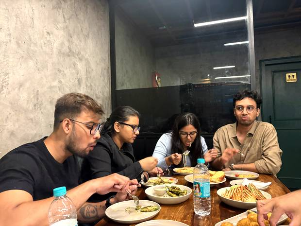
after every war: the shawarma scene. carbs remain undefeated.
Mon, 12 Oct 2026DasaraNo. 223
Group attempts garba; net, shuttle and deck all feel replaced
Under four hundred fairy lights, the members discovered a sport where you cannot blame the wind, cannot amend the rules mid-game, and cannot attend as your own audience. Garba does not care who the Empress is.
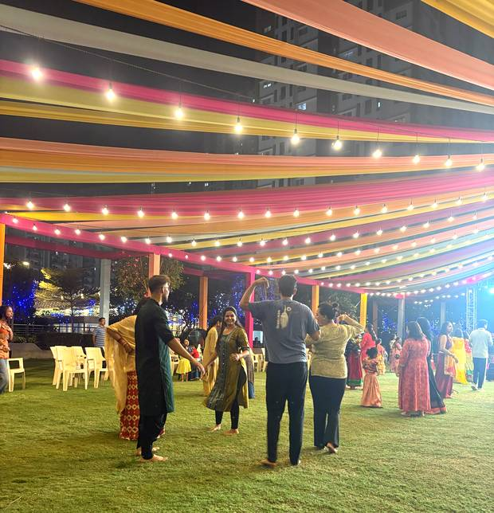
chappals off, phones down, two left feet fully deployed
Footwork split neatly along existing lines: those who clapped on the beat were the same people who bid on their actual cards.
Wed, 15 Oct 2026BirthdayNo. 224
Mafia kills Rudra before the game begins; God watches in silence
Puja's birthday drew 11 of 12 — several seen together for the first time in years, Abhishek included, awake, with no mention of office work. The birthday girl was surprised in the modern sense: she knew, everyone knew she knew, and she performed surprise anyway, out of respect for the balloons.
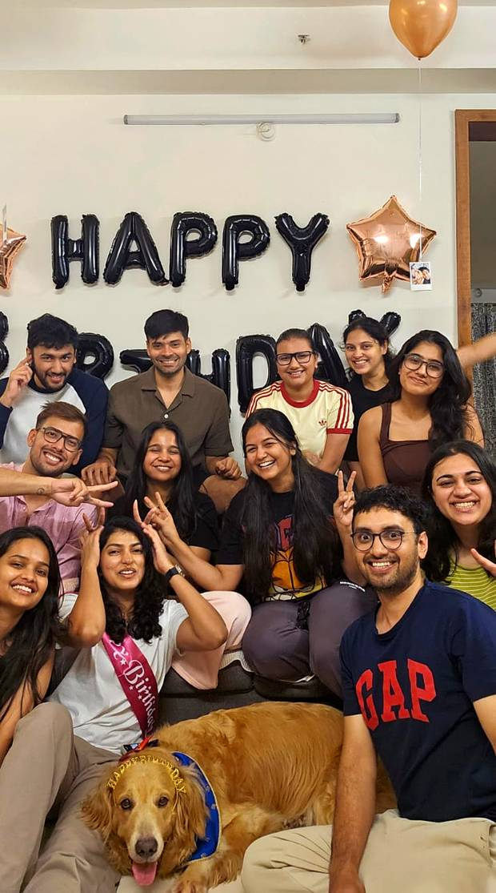
eleven humans, one golden retriever, zero suspicion — for now
Before a card was dealt, Rudra moved decisively into the core seat — comfortable, central, strategically unimpeachable — supported by Sherry. When the Empress endorses a land grab, the land has been grabbed.
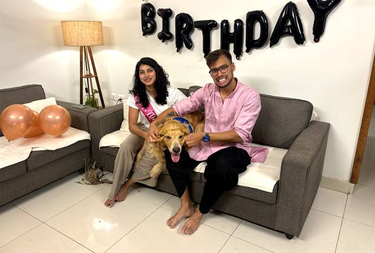
the only guest who didn't take sides all night
Then Mafia. Rudra was killed before the game properly started. Khyati — three weeks into this group — helped the Mafia win by invoking a side rule only veterans know exists. The Mafia had won within five minutes. God said nothing, let the village debate for sport, and the Mafia, unable to admit victory, were reduced to playing to lose.
"They had already won. Nobody told the village. The village kept voting."
Earlier that week: Rahul, Avani and Shilpee ran a full coaching session to teach Rudra garba steps — three instructors, one student, the same ratio previously required for card shuffling. He then invented the bulb-tap-cigarette step, which the team picked up cleaner than he performs it.
The Cast
Twelve people, one net, and a remarkable commitment to never resolving anything.
Sherry
Empress · Bluff & Cabo
Started the year blaming a stationary net. Ends it holding two crowns, a framed threat, a secret cafe in Gurgaon and a religion built on "arey yaar."
regulators are investigating the smile
Abhishek
Ex-Champion · Indoor Meteorologist
Two immortal lines: "ye galti kar diya apne" and "hawa aaj jyada hai" — the latter filed 40 times from inside a sealed building. Plays other people's hands better than his own, free of charge.
once slept for five days, called it office work
Rudra
Nobel Laureate · Existence Disputed
House audited "very exaggerated." Declared non-existent mid-Cabo. Cannot shuffle. Cannot learn seep. Killed before a Mafia game started. Redeemed entirely by one tray of tea.
owns this newspaper, which explains the tone
Amit
The Last Honest Man
Sentenced under the Plastic Bat Act to play every badminton game forever. Complied silently. Zero excuses across the entire archive. Plays alone when nobody turns up.
an inquiry remains open into whether he understands the format
Rahul
Head of Planning · Gold Medallist
847 proposals, one success. Holder of the worst round in history (+35) and the only person to lose to a bucket of still water — then won an actual tournament and booked the Goa hotel.
rebrand count: two and climbing
Avani
The Competence Desk
The only person who plays judgement sensibly — bids on her cards while everyone else bids on hope and revenge. Enrolled in two gurukul branches in one day. Her one law: tea during gameplay.
everyone else is doing therapy; she's doing arithmetic
Sumana
Chef · Founder, "Are We Playing?"
Attended entire card games holding cards, receiving points, participating in nothing. Lost nothing. Her peanut chutney was cleared of all charges on merit.
possibly the only one who understood the assignment
Puja
The Guru · Birthday Girl
Taught everyone Cabo in eleven minutes and unleashed all of this. Vanished to Sakleshpur for a week of confirmed shallow work. Beat Abhishek at judgement on debut. Author of the sentence that ended Goa.
close enough to be invited, far enough to decline
Shilpee
Chess Champion
Mocked for months over perfect absence. Was not absent — was training. Won her company chess tournament outright while everyone else filed indoor wind reports.
attendance 0, trophies 1
Pankhuri
The Sleeper
Co-filed the historic blindfold legislation, then went dark through empires, audits, buckets and coronations. Zero trades, zero losses, zero galtis.
watching all of this from a safe distance
Khyati
The Quiet Danger
Lost her first Cabo game before finishing her introduction. Three weeks later, won Mafia for the opposing side using a side rule only veterans know. Then said nothing.
silence is the weapon
The Net
Falsely Accused
Stood at regulation height. Was publicly blamed. Was formally vindicated by this paper. Has never received an apology from any party.
remains at regulation height, purely out of spite
Hall of Records
Permanent exhibits. Appeals may be filed and will be ignored.
4 ft
The Founding Miss
Distance the original shot missed by. The net was blamed. The net had not moved.
108
Longest Chant
"Arey yaar" in one session — exactly one mala. Now classified as a spiritual practice.
+35
Worst Round Ever
Rahul, one round. Unbeaten, unbreakable, framed in the corridor.
80%
Largest Outsourcing
Share of Rudra's card game played by Abhishek while Rudra sat there nodding.
40
Indoor Weather Reports
Wind conditions filed by Abhishek from inside a sealed building.
847
Proposals Filed
By Rahul, before one was approved. He then couldn't book a room for it.
1–0
Bucket vs Man
The bucket remains undefeated and has never offered an excuse.
0:00
Fastest Mafia Death
Rudra, killed before the game properly began. A record built to last.
0
Matches Settled
The original rematch has never been played. It never will be.
The Laws of the Land
Unwritten until now. Binding on everyone. Nobody remembers agreeing to any of them.
1
Cabo ke baad decide karte
Any decision may be deferred indefinitely by invoking a card game that may never begin.
2
The Amit Clause
Injure a player, play all games. Forever. Knees have no standing to appeal.
3
The Beverage Clause
Tea must flow during gameplay. Passed unanimously, out of fear of Avani.
4
The Travel Tax
Cards will be played en route to any destination. The Empress collects.
5
Colour Is Not A Flavour
No dish may be criticised for how it looks if the plate came back empty.
6
The Net Is Innocent
It was at regulation height. It always was. No apology has ever been issued.
7
The Environment Has No Right Of Reply
Wind, light, chair height and the deck may be blamed freely and cannot defend themselves.
8
Rule Tweaks Are Legislation
A rule changed before play and agreed by all is not cheating, however convenient it turns out to be.
What's Next
Fixtures, rumours and pending legislation.
Friday · 8 PM
Garba Night
Confirmed, timed, agreed. The bulb-tap-cigarette step makes its public debut. Attendance expected; excuses already being drafted.
Saturday
Mafia, Extended Edition
With silencer and suicide bomber. Requires 15 people. Not decided, not scheduled, not currently possible — but Khyati wants it, which historically means it will happen.
TBD
Box Cricket
Abhishek sponsoring the team, making him the first man to fund a defeat before it happens.
Never
The Original Rematch
Still unplayed. The net remains at regulation height and fully available.